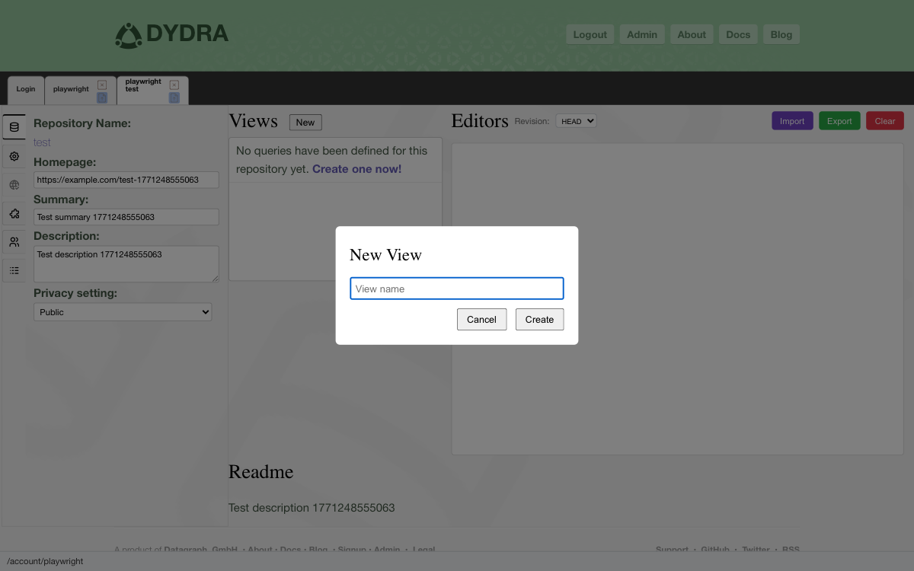
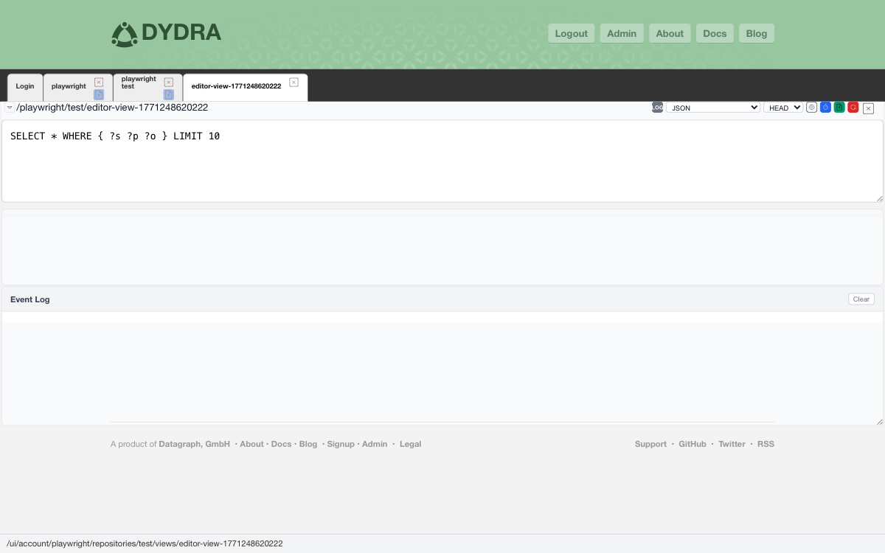
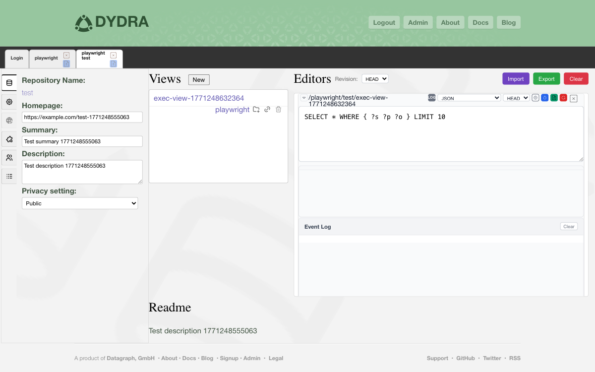
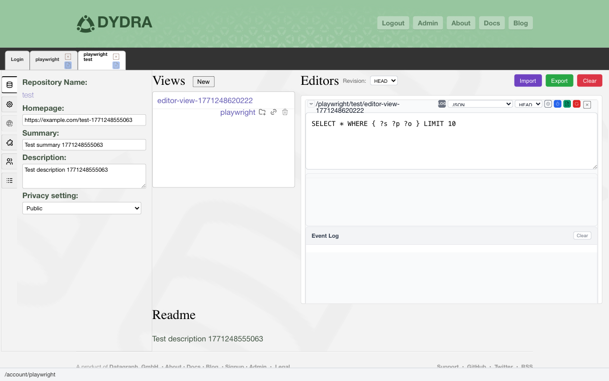

4.1 Questions Worth Keeping
A view is a question you have decided is worth keeping. You asked it once — maybe you crafted it carefully, maybe it came to you all at once — and you got an answer that mattered. So you thought: I am going to want to ask this again. And you saved it.
More formally, a view in Dydra is a named, persistent SPARQL query that lives alongside a repository. SPARQL is the standard language for querying RDF data — a way of describing the patterns you are looking for and having the system find them for you. Views take those queries and give them names, making them available to run again and again, and to share with collaborators who might find them useful.
4.2 What Views Give You
- A permanent home for queries you use regularly
- The ability to share useful queries with repository collaborators
- A choice of output formats — from tables to JSON to visual graphs
- A way to organize your analytical work within each repository
4.3 Creating a View

Figure 4.1: The view creation dialog.

Figure 4.2: The creation confirmation message.
4.4 Editing a Query in the Repository Pane
The most direct way to write or modify a query is right inside the repository pane.
4.4.1 Opening the Editor
4.4.2 Writing and Saving Your Query

Figure 4.3: The query editor within the repository pane.
4.5 Opening a View in Its Own Pane
Sometimes you want more room to work — a dedicated space just for this view, separate from the repository listing. Dydra can do that.

Figure 4.4: The query editor in its own dedicated pane.
4.6 Running a Query
4.6.1 Executing from the Editor

Figure 4.5: The editor, poised and ready to run.
4.6.2 Choosing Your Format
Here is a guide to the available result formats and when each one is useful:
| Format | Media Type | Best For |
|---|---|---|
| JSON | application/sparql-results+json | Programmatic use — scripts and applications (the default) |
| XML | application/sparql-results+xml | Integration with XML processing pipelines |
| HTML | text/html | Human reading — a clean, readable table |
| CSV | text/csv | Importing into a spreadsheet |
| TSV | text/tab-separated-values | Text processing and scripting |
| Turtle | text/turtle | CONSTRUCT query results |
| N-Triples | application/n-triples | CONSTRUCT query results |
| RDF/XML | application/rdf+xml | CONSTRUCT query results |
| JSON-LD | application/ld+json | CONSTRUCT query results |
| SVG | image/vnd.dydra.SPARQL-RESULTS+GRAPHVIZ+SVG+XML | Graph visualization — seeing your data as a diagram |
4.7 Viewing Results in a New Window
Sometimes you want to see the results on their own, without the editor alongside. You can do that too.

Figure 4.6a: The window control.

Figure 4.6b: Query results displayed in their own window.
4.8 Deleting a View

Figure 4.7: The deletion confirmation dialog.
4.9 Features of the Editor
4.9.1 Multiple Tabs
The editor supports multiple tabs, each holding its own query and its own results. This is useful for developing variations of a query and comparing what each one returns. Tabs can be closed individually when you are done with them.
4.9.2 Resetting to the Saved Version
The Reset button restores the query text to its last saved state, discarding whatever you have typed since then. Useful when an experiment has gone sideways and you want to start fresh from what you know worked.
4.9.3 The Event Log
The editor keeps a quiet log of everything that happens: queries that ran, saves that completed, errors that occurred, and how long each execution took. When something goes wrong, the event log is often where the answer is waiting.
4.9.4 Dragging a Tab to a New Window
You can drag an editor tab outside the browser window entirely, and it will open as a standalone window — with the query and its results intact, ready for you to keep working.
4.10 Good Habits for View Management
- Name views clearly. Six months from now, you will appreciate a name that explains what the query actually does.
- Group related views together by keeping them in the same repository.
- Comment your queries. SPARQL allows comments with the
#character. Use them to explain what the query is for and any subtleties in how it works. - Test before saving. Run the query interactively and confirm it gives you what you expect before making it permanent.
- Keep a backup of critical queries. The system is reliable, but important queries are worth having on your own machine too.
4.11 When Things Go Wrong
4.11.1 Save Is Not Working
- Make sure you actually clicked Save
- Check the event log for an error message
- Verify you have write permission on this repository
- Check your network connection
4.11.2 The Query Produces an Error
- Look carefully at your SPARQL syntax
- Check that your URIs and prefixes are correct
- Read the event log — the error message there is often quite specific
- Verify that the repository contains the data you expect the query to find
4.11.3 A View Has Disappeared
- Refresh the browser
- Make sure the creation was confirmed at the time
- Double-check that you are in the right repository
- Confirm you have read access
4.12 Continuing On
- Practical wisdom and good habits — Chapter 5
- Format specifications and reference tables — Appendices